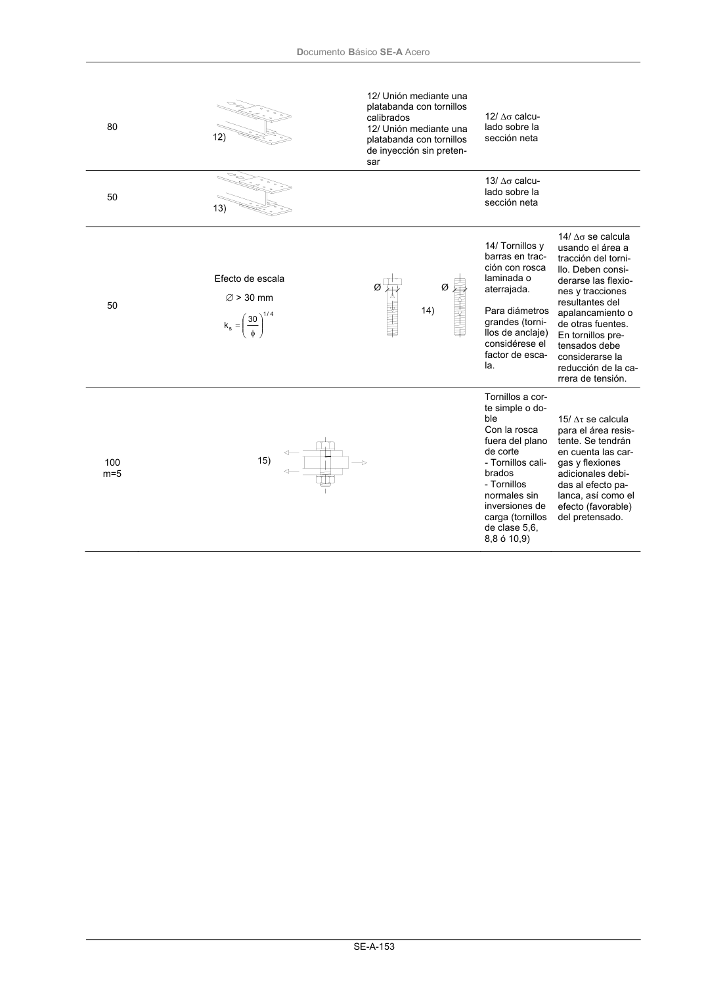
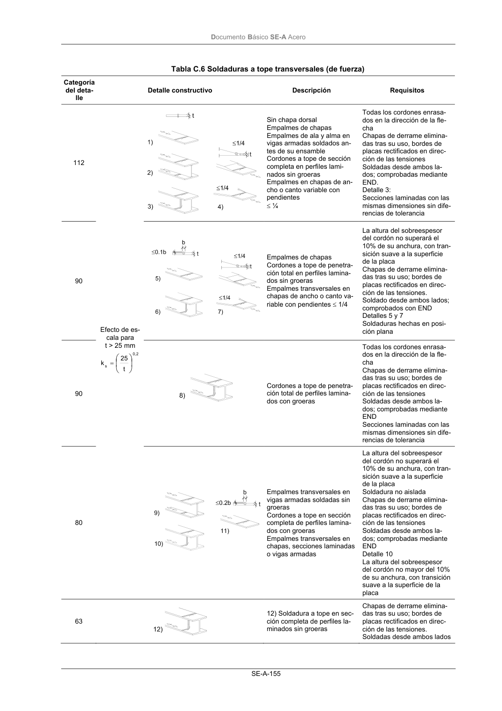
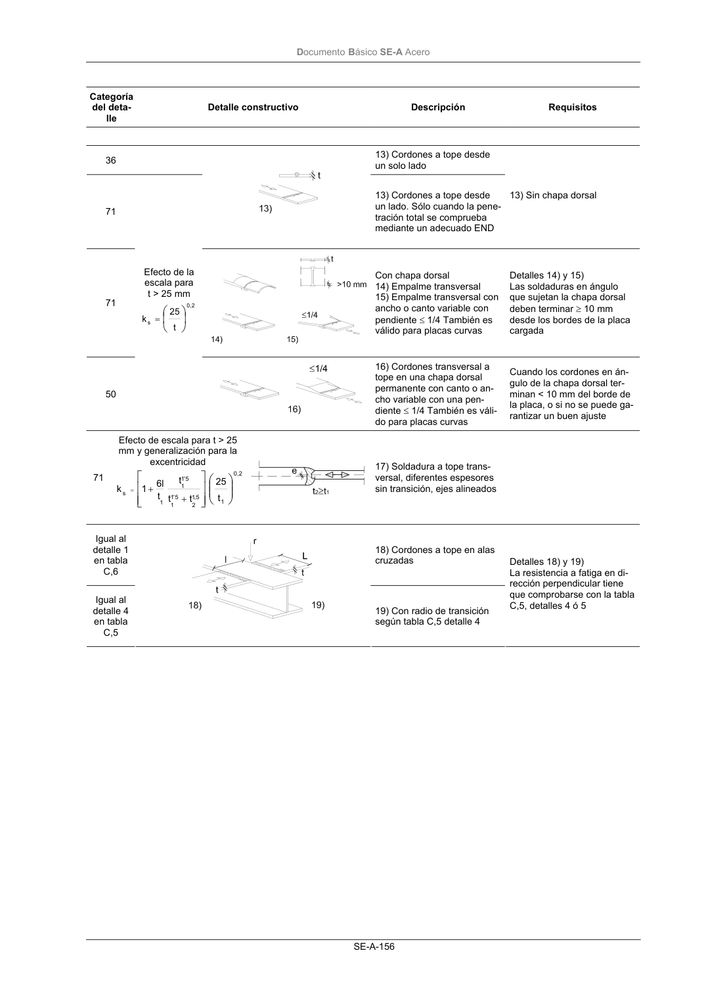
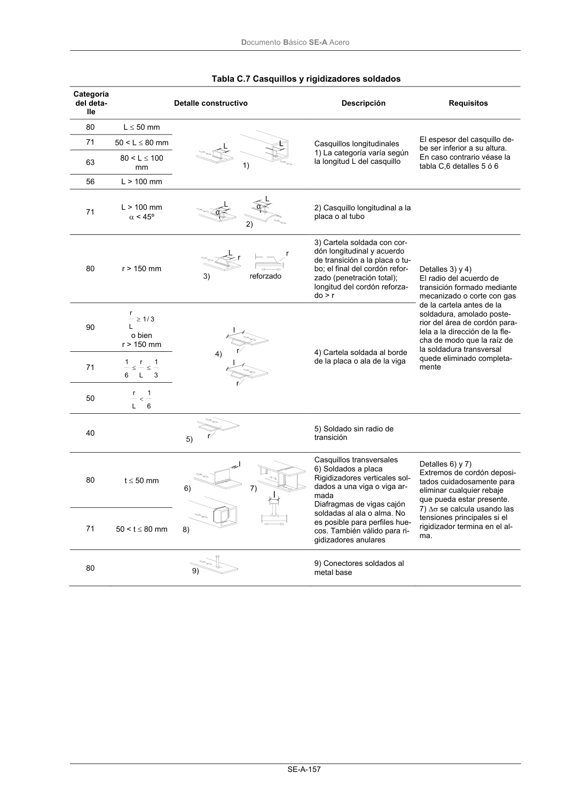

DB-SE-A · Fragmento de PDF p154 · versión 2007-10-23 · capa oficial
Formatos: JSON compacto · Markdown · PDF fuente
Ámbito del documento · texto del ámbito · documento y tablas
ID técnico a0214 · PDF pág. 154-160 · jerarquía no validada por persona · no es capítulo: linea_sin_formato_de_encabezado · padre: raíz · literal original en el contenido: «sección bruta»
sección bruta 90 11/ Pieza con agujeros sometida a flexión y axil 11/ ∆τ calcu- lado sobre la sección neta Para uniones atornilladas (Deta- lles 8 a 13) en ge- neral: Distancia al ex- tremo: e1≥ 1’5 d Distancia al bor- de: e2≥ 1’5 d Espaciado: P1≥ 2’5 d P2≥ 2’5 d DocumentoBásico SE-A Acero SE-A-153 80 12/ Unión mediante una platabanda con tornillos calibrados 12/ Unión mediante una platabanda con tornillos de inyección sin preten- sar 12/ ∆σ calcu- lado sobre la sección neta 50 13/ ∆σ calcu- lado sobre la sección neta 50 Efecto de escala ∅ > 30 mm 4 / 1 s 30 k φ = 14/ Tornillos y barras en trac- ción con rosca laminada o aterrajada. Para diámetros grandes (torni- llos de anclaje) considérese el factor de esca- la. 14/ ∆σ se calcula usando el área a tracción del torni- llo. Deben consi- derarse las flexio- nes y tracciones resultantes del apalancamiento o de otras fuentes. En tornillos pre- tensados debe considerarse la reducción de la ca- rrera de tensión. 100 m=5 Tornillos a cor- te simple o do- ble Con la rosca fuera del plano de corte - Tornillos cali- brados - Tornillos normales sin inversiones de carga (tornillos de clase 5,6, 8,8 ó 10,9) 15/ ∆τ se calcula para el área resis- tente. Se tendrán en cuenta las car- gas y flexiones adicionales debi- das al efecto pa- lanca, así como el efecto (favorable) del pretensado. DocumentoBásico SE-A Acero SE-A-154 Tabla C.5 Secciones armadas soldadas Categoría del deta- lle Detalle constructivo Descripción Requisitos 125 Cordones longitudinales continuos Cordones a tope automáticos por ambos lados. Cordones en ángulo automáticos. Los extremos de las platabandas deben comprobarse usando los detalles 5) ó 6) de la tabla C,6 Detalles 1) y 2) No se permite interrupción alguna del cordón excepto si lo repara un especialista y se inspecciona la reparación 112 Cordones automáticos a tope o en ángulo hechos desde ambos lados pero con interrupciones en el sol- deo. Cordones a tope automáticos hechos desde un solo lado con una chapa dorsal continua sin interrup- ciones en el soldeo. 4) Si en este detalle se produ- cen interrupciones en el soldeo debe utilizarse la clase 100 100 Cordones manuales a tope o en án- gulo Cordones a tope manuales o auto- máticos hechos desde un solo lado en vigas cajón 6) Es esencial un ajuste perfec- to entre las chapas de ala y al- ma. El borde del alma debe prepararse de modo que se consiga penetración regular en la raíz sin interrupciones 100 7) Cordones a tope o en ángulo, ejecutados automática o manual- mente (detalles 1 a 6) y reparados. 7) La categoría original se pue- de recuperar si un especialista procede a un amolado para eli- minar los defectos visibles y si se lleva un control adecuado 80 8) Cordones en ángulo longitudina- les intermitentes 8) ∆σ calculado a partir de las tensiones normales en el ala 71 9) Cordones longitudinales a tope y en ángulo, continuos o intermitentes con groeras de diámetro no superior a 60 mm 9) ∆σ calculado a partir de las tensiones normales en el ala 125 10) Cordones a tope longitudinales con ambos lados rectificados en pa- ralelo a la dirección de carga, 100% END 112 10) Sin amolado ni interrupciones 90 10) Con interrupciones 140 11) Costura longitudinal con solda- dura automática sin interrupciones en secciones huecas 11) Libre de defectos fuera de las tolerancias de UNE-ENV 1090-1:1997 Espesor de pared t ≤ 12,5 mm 125 11) Costura longitudinal con solda- dura automática sin interrupciones en secciones huecas 90 11) Con posiciones de arran- que/parada 11) Espesor de pared t > 12,5 mm Para los detalles 1 a 11 repasados mediante mecanizado se pueden aplicar las categorías correspondientes a soldadura automá- tica. DocumentoBásico SE-A Acero SE-A-155 Tabla C.6 Soldaduras a tope transversales (de fuerza) Categoría del deta- lle Detalle constructivo Descripción Requisitos 112 Sin chapa dorsal Empalmes de chapas Empalmes de ala y alma en vigas armadas soldados an- tes de su ensamble Cordones a tope de sección completa en perfiles lami- nados sin groeras Empalmes en chapas de an- cho o canto variable con pendientes ≤ ¼ Todas los cordones enrasa- dos en la dirección de la fle- cha Chapas de derrame elimina- das tras su uso, bordes de placas rectificados en direc- ción de las tensiones Soldadas desde ambos la- dos; comprobadas mediante END. Detalle 3: Secciones laminadas con las mismas dimensiones sin dife- rencias de tolerancia 90 Empalmes de chapas Cordones a tope de penetra- ción total en perfiles lamina- dos sin groeras Empalmes transversales en chapas de ancho o canto va- riable con pendientes ≤ 1/4 La altura del sobreespesor del cordón no superará el 10% de su anchura, con tran- sición suave a la superficie de la placa Chapas de derrame elimina- das tras su uso; bordes de placas rectificados en direc- ción de las tensiones. Soldado desde ambos lados; comprobados con END Detalles 5 y 7 Soldaduras hechas en posi- ción plana 90 Cordones a tope de penetra- ción total de perfiles lamina- dos con groeras Todas los cordones enrasa- dos en la dirección de la fle- cha Chapas de derrame elimina- das tras su uso; bordes de placas rectificados en direc- ción de las tensiones Soldadas desde ambos la- dos; comprobadas mediante END Secciones laminadas con las mismas dimensiones sin dife- rencias de tolerancia 80 Efecto de es- cala para t > 25 mm 2 , 0 s t 25 k = Empalmes transversales en vigas armadas soldadas sin groeras Cordones a tope en sección completa de perfiles lamina- dos con groeras Empalmes transversales en chapas, secciones laminadas o vigas armadas La altura del sobreespesor del cordón no superará el 10% de su anchura, con tran- sición suave a la superficie de la placa Soldadura no aislada Chapas de derrame elimina- das tras su uso; bordes de placas rectificados en direc- ción de las tensiones Soldadas desde ambos la- dos; comprobadas mediante END Detalle 10 La altura del sobreespesor del cordón no mayor del 10% de su anchura, con transición suave a la superficie de la placa 63 12) Soldadura a tope en sec- ción completa de perfiles la- minados sin groeras Chapas de derrame elimina- das tras su uso; bordes de placas rectificados en direc- ción de las tensiones. Soldadas desde ambos lados DocumentoBásico SE-A Acero SE-A-156 Categoría del deta- lle Detalle constructivo Descripción Requisitos 36 13) Cordones a tope desde un solo lado 71 13) Cordones a tope desde un lado. Sólo cuando la pene- tración total se comprueba mediante un adecuado END 13) Sin chapa dorsal 71 Con chapa dorsal 14) Empalme transversal 15) Empalme transversal con ancho o canto variable con pendiente ≤ 1/4 También es válido para placas curvas Detalles 14) y 15) Las soldaduras en ángulo que sujetan la chapa dorsal deben terminar ≥ 10 mm desde los bordes de la placa cargada 50 Efecto de la escala para t > 25 mm 2 , 0 s t 25 k = 16) Cordones transversal a tope en una chapa dorsal permanente con canto o an- cho variable con una pen- diente ≤ 1/4 También es váli- do para placas curvas Cuando los cordones en án- gulo de la chapa dorsal ter- minan < 10 mm del borde de la placa, o si no se puede ga- rantizar un buen ajuste 71 Efecto de escala para t > 25 mm y generalización para la excentricidad 2 , 0 1 5 ,1 2 5 '1 1 5 '1 1 1 s t 25 t t t t l6 1 k + + = 17) Soldadura a tope trans- versal, diferentes espesores sin transición, ejes alineados Igual al detalle 1 en tabla C,6 18) Cordones a tope en alas cruzadas Igual al detalle 4 en tabla C,5 19) Con radio de transición según tabla C,5 detalle 4 Detalles 18) y 19) La resistencia a fatiga en di- rección perpendicular tiene que comprobarse con la tabla C,5, detalles 4 ó 5 DocumentoBásico SE-A Acero SE-A-157 Tabla C.7 Casquillos y rigidizadores soldados Categoría del deta- lle Detalle constructivo Descripción Requisitos 80 L ≤ 50 mm 71 50 < L ≤ 80 mm 63 80 < L ≤ 100 mm 56 L > 100 mm Casquillos longitudinales 1) La categoría varía según la longitud L del casquillo El espesor del casquillo de- be ser inferior a su altura. En caso contrario véase la tabla C,6 detalles 5 ó 6 71 L > 100 mm α < 45º 2) Casquillo longitudinal a la placa o al tubo 80 r > 150 mm 3) Cartela soldada con cor- dón longitudinal y acuerdo de transición a la placa o tu- bo; el final del cordón refor- zado (penetración total); longitud del cordón reforza- do > r 90 3 / 1 L r ≥ o bien r > 150 mm 71 3 1 L r 6 1 ≤ ≤ 50 6 1 L r < 4) Cartela soldada al borde de la placa o ala de la viga Detalles 3) y 4) El radio del acuerdo de transición formado mediante mecanizado o corte con gas de la cartela antes de la soldadura, amolado poste- rior del área de cordón para- lela a la dirección de la fle- cha de modo que la raíz de la soldadura transversal quede eliminado completa- mente 40 5) Soldado sin radio de transición 80 t ≤ 50 mm 71 50 < t ≤ 80 mm Casquillos transversales 6) Soldados a placa Rigidizadores verticales sol- dados a una viga o viga ar- mada Diafragmas de vigas cajón soldadas al ala o alma. No es posible para perfiles hue- cos. También válido para ri- gidizadores anulares Detalles 6) y 7) Extremos de cordón deposi- tados cuidadosamente para eliminar cualquier rebaje que pueda estar presente. 7) ∆σ se calcula usando las tensiones principales si el rigidizador termina en el al- ma. 80 9) Conectores soldados al metal base DocumentoBásico SE-A Acero SE-A-158 Tabla C.8 Uniones soldadas de fuerza Catego- ría del detalle Detalle constructivo Descripción Requisitos 80 L < 50 71 50 < L < 80 63 80 < L < 100 56 100 < L < 120 Todo t 56 L > 120 t < 20 50 120 < L ≤ 200 L > 200 t > 20 20 < t < 30 45 200 < L ≤ 300 L > 300 t > 30 30 < t < 50 40 L > 300 t > 50 Juntas cruciformes y en T 1) Fallo de la raíz en soldaduras a tope de penetración total y uniones de penetra- ción parcial Como el detalle 1 2) Fallo de la raíz desde el borde del Casquillo a la placa, con picos de tensión en los extremos del cordón debido a de- formaciones locales de la placa 36* 3) Fallo de la raíz en uniones a tope con






PDF fuente redistribuible: copia fiel enlazada en esta página (SHA256 verificado).